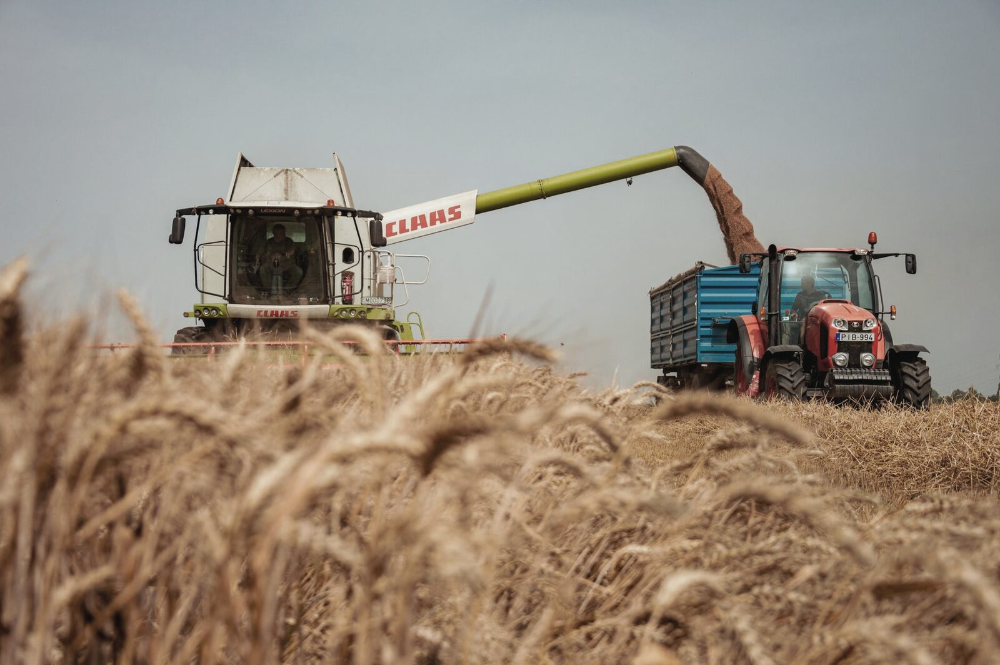
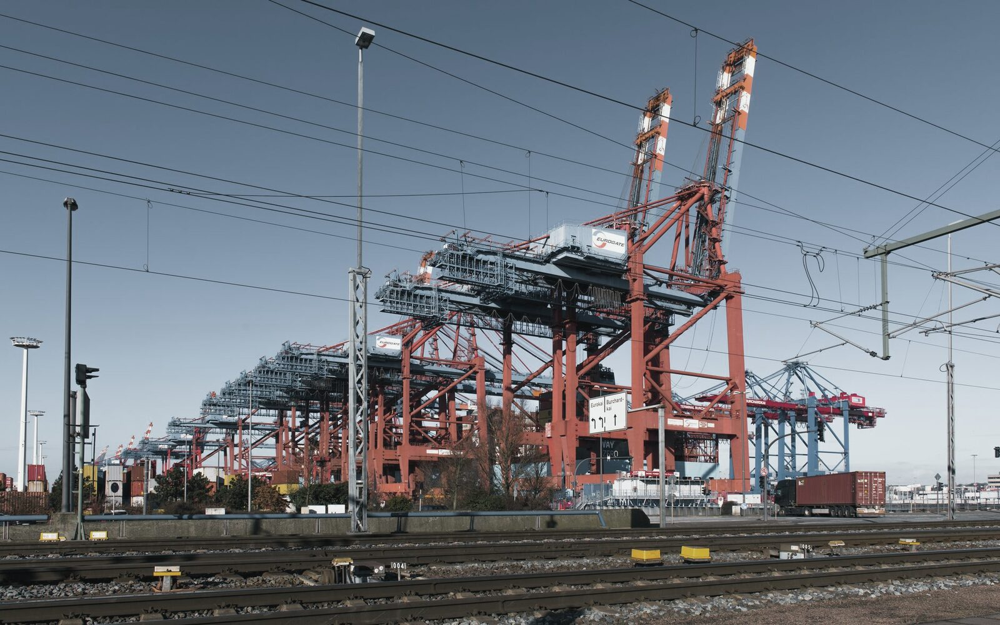
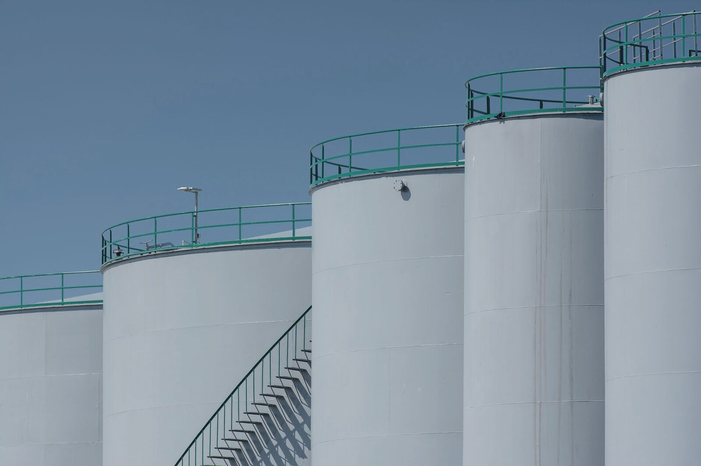
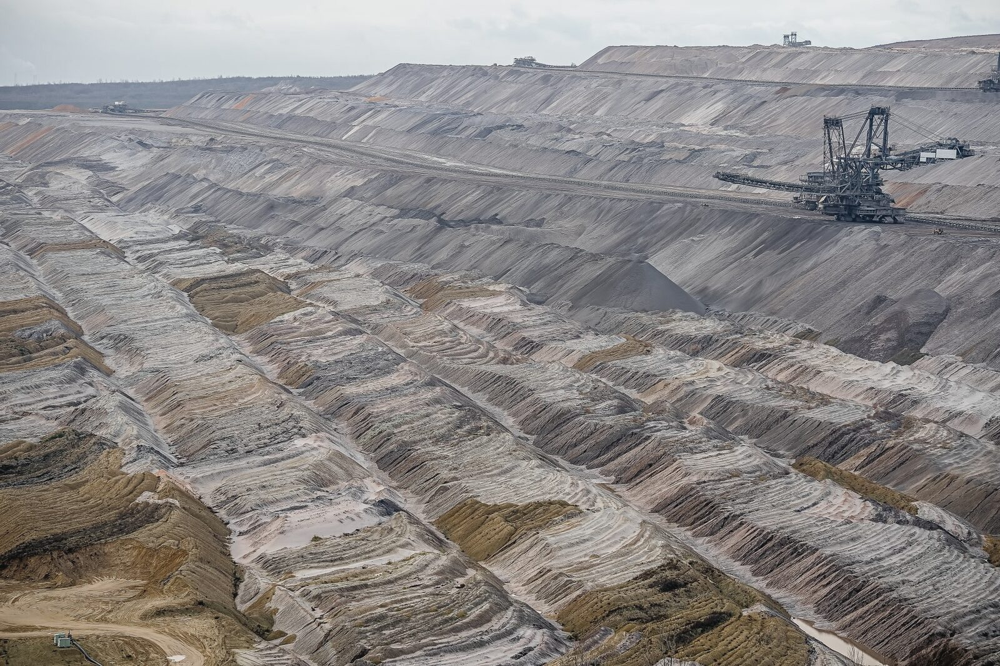

Sourcing, structuring and cross-border trade of agricultural and food commodities through a trusted international network.
Explore division
Trusted international network
Cross-border advisory
NovaTerra structures, facilitates and supports cross-border opportunities—connecting credible counterparties, investors, suppliers, governments and institutional partners through a trusted international network.
Global trade / strategic delivery
Who we are
From our head office in South Africa to active markets in Guyana, Suriname, Dubai, Ghana, and Zimbabwe, NovaTerra operates where mandates are won and lost on the ground — not just in the term sheet. Every engagement is mandate-driven, every transaction traceable, and every execution held to account.
How We Work
How we work
Four stages, applied without exception — the same file discipline whether the mandate is a single cargo or a multi-year infrastructure programme.
Nothing opens without a written mandate: what is being moved, between whom, on what terms, and what the outcome is measured against.
Counterparties, title, capacity and compliance are verified before capital or cargo moves. Nothing is taken on representation.
Contract, instrument, logistics and payment pathways are structured across borders, with the right local partner attached to each leg.
We stay on the file through delivery — milestones tracked, documentation traceable, and outcomes reported against the KPIs set on day one.
What we do
Sourcing, structuring and cross-border trade of agricultural and food commodities through a trusted international network.
Explore division
Market entry, investment facilitation and transaction structuring across petroleum, storage, logistics and infrastructure.
Explore division
Sourcing intelligence, technical verification and offtaker identification for diamonds and critical minerals.
Explore division
Buyer-seller alignment, testing, and refinery relationships for gold, doré, and precious metals.
Explore divisionExecutive Profile
Founder & Principal Consultant
NovaTerra Consultancy
Operating across
Africa, South America, the Caribbean, the UAE and Europe
Xiomara Devica is the Founder and Principal Consultant of NovaTerra Consultancy, where she focuses on structuring and facilitating cross-border transactions, strategic partnerships and government-led opportunities across commodities, energy, infrastructure and natural resources.
She began her career in the diamond industry following professional education in the planning, grading and sorting of rough and polished diamonds, gaining hands-on industry experience across Congo-Kinshasa, South Africa, Zimbabwe and the UAE.
In Dubai, she worked with a DMCC-based trading company active in the gold and diamond sector, further developing her understanding of international commodity markets, trading relationships and cross-border transactions.
Throughout her career, Xiomara has facilitated transactions involving commodities, precious metals and fine minerals and has worked on securing funding and strategic partnerships for international projects. Her professional network has included relationships and collaboration with international legal, financial, commercial and industry partners.
Today, her work extends across Africa, South America, the Caribbean, the UAE and Europe, where she operates as a strategic connector between governments, investors, operators, suppliers and private-sector partners.
Her expertise extends beyond transaction facilitation into strategic procurement, investment, market entry, stakeholder alignment and cross-border negotiations. Her understanding of different markets, cultures and commercial environments enables her to identify opportunities and build relationships across regions that do not always naturally intersect.
Through NovaTerra, Xiomara combines sector knowledge, international relationships and entrepreneurial vision to transform opportunities into commercially viable partnerships and transactions.
Start a conversation
Whether you represent a government, institution, investor, operator, buyer or supplier, we welcome serious enquiries.